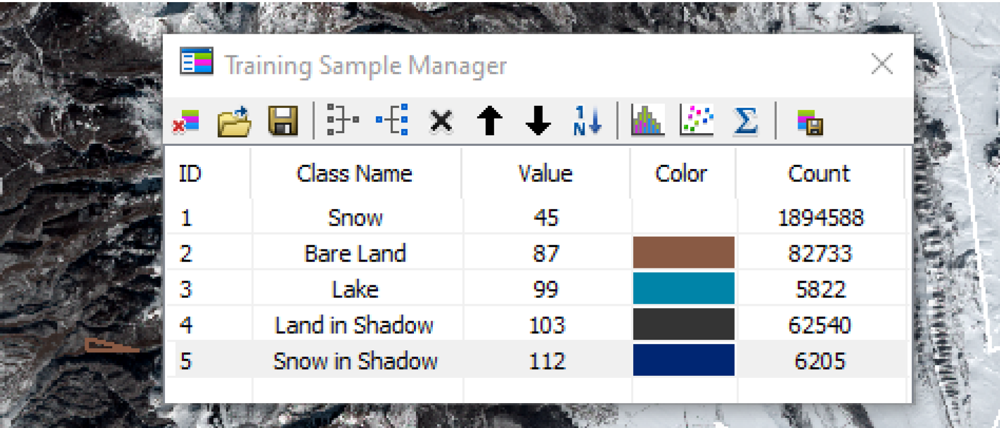
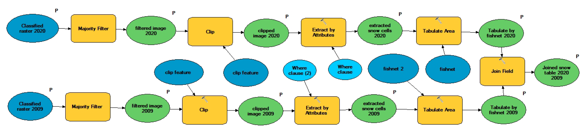
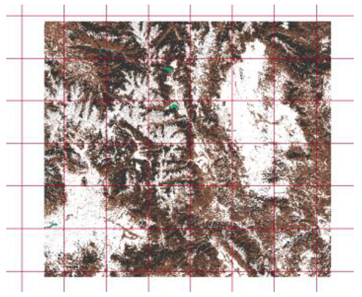
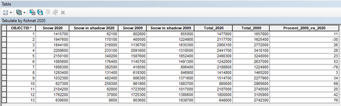

Differences in snow coverege
The main idea is a calculation and show on the map how the climate change affects the snow area in the region of the Gunnison National Forest, USA.
Research Goal
The climat change affects the snow volume at the mouting region at the Gunnison National Forest, USA. The main goal of this project is evaluation of the historical trend of the snow volume and show this trend on the map.
Image Source
Two images downloaded from https://earthexplorer.usgs.gov/ for two dates: December 2009 and December 2020 (Lansat 7 ETM+ C1 Level-1 images)
Research Process
A new ArcMap document was created and set it up per the usual settings (default geodatabase, save the document, set up environment, etc). This project id a part of Geographic Information Systems (GIS) Specialization taught by UC Davis through Coursera.
Image Classification process was repeated twice for 2020 Image and 2009 Image. multi-band raster imagery was converted into a single-band raster with a number of categorical classes that related to different types of land cover: Composite Bands Tool (Data Management) for bands 1, 2, 3. A Training Samples Manager was created with a minimum of 10 training samples for 5 different classes: Snow, Snow in Shadow, Land, Land in Shadow, Lake.
Training Samples Manager saved as a Signature File.Maximum Likelihood Classification Tool run. Symbology in an output classified layer set.
Model Builder
A Majority Filter Tool was used to improve the quality of the classified layer. Rectangular shapefile for Clip Tool: Draw, Rectangular, Convert Graphics to Features created.
A Clip Tool was used to remove all Null values. The values related to snow (Snow+Snow in Shadow) were extracted by Extract by Attributes Tool. The map was devided by Create Fishnet Tool to the grud (10x10). Detailed analysis of the snow areas differences between 2020 image and 2009 image was conducted by Tabulate Area Tool.
The Percent_2009_vs_2020 calculated by formula: Percent=(2009-2020)/2009*100. The result of the cacculation is presented in the table below (the last colunm).
To show differences in snow coverage between images 2020 and 2009 the Difference option in Image Analysis window was used. The result is presented on the map. The Classification statistics in Symbology was used on the basis of the table. The green colors show the areas where (2009-2020)>0: The snow cover area decreesed from 2009 to 2020; the red colors show the areas where (2009-2020)<0: The snow area increesed from 2009 to 2020.
Result
Analysis of the table and map shows that the total area of snow coverage in 2009 greater than in 2020 at average for 30 percent.